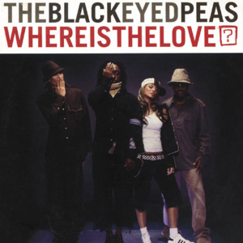

Black Eyed Peas
Black Eyed Peas (also known as The Black Eyed Peas) is an American musical group consisting of rappers will.i.am, apl.de.ap, Taboo and J. Rey Soul. Originally an alternative hip hop group, they subsequently refashioned themselves as a more marketable pop-rap act. Although the group was founded in Los Angeles in 1995, it was not until the release of their third album, Elephunk, in 2003, that they achieved high record sales.

Black Eyed Peas' first major hit was the 2003 single "Where Is the Love?" from Elephunk, which topped the charts in 13 countries, including the United Kingdom, where it spent seven weeks at number one and went on to become Britain's biggest-selling single of 2003. Their fourth album, Monkey Business, was an even bigger worldwide success, and became certified 3× Platinum in the United States. In 2009, the group became one of only 11 artists to have simultaneously held the number-one and number-two spots on the Billboard Hot 100, with their singles "Boom Boom Pow" and "I Gotta Feeling", which topped the chart for an unprecedented 26 consecutive weeks.
More songs